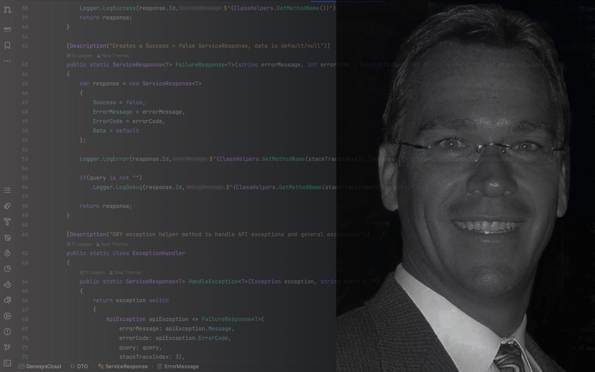
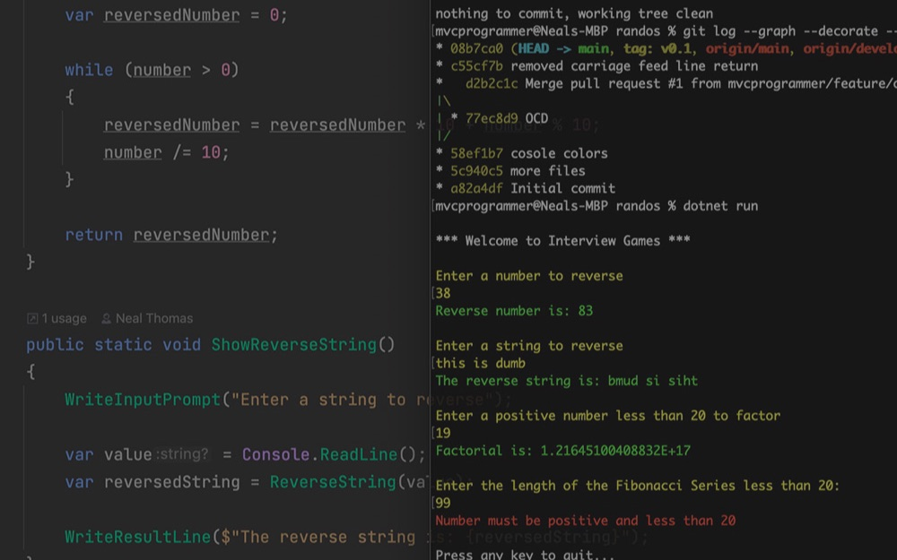
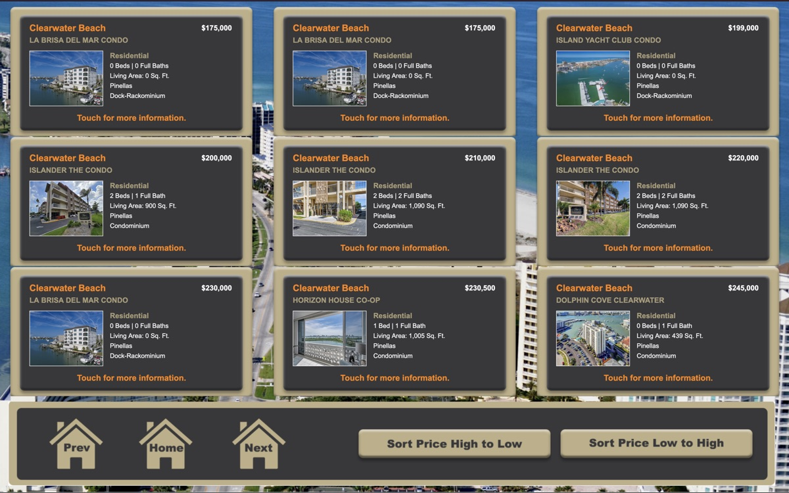

Design
Turning requirements from Product into scalable design blueprints, from Sprint 0 and architecture review through technical specs and backlog grooming.
Tampa Bay area, Florida, USA
Senior full-stack engineer building enterprise business applications on C# / .NET, Angular, and SQL Server.
01 / About
I've spent 15+ years building enterprise business applications on C# / .NET and SQL Server, with Angular front ends over ASP.NET Core Web APIs. My SQL Server work runs deep: complex queries, stored procedures, indexing, execution plan analysis, and performance tuning under concurrent load.
Most recently I re-architected a legacy interval-polling Windows service into an event-driven RabbitMQ pipeline that handles 1M+ API requests around the clock. Before that I developed and maintained TOPS Software's proprietary accounting system, covering general ledger, receivables, payables, bank reconciliation, and financial reporting.
I follow SOLID principles and modern patterns like CQRS and dependency injection, and I own work from Sprint 0 and architecture review through delivery, including code review, mentoring, and production root-cause analysis. AI-assisted tools like Claude Code are part of my daily workflow.
Download code samplesSometimes it is the people no one can imagine anything of who do the things no one can imagine.
02 / Services
Turning requirements from Product into scalable design blueprints, from Sprint 0 and architecture review through technical specs and backlog grooming.
Maintainable, efficient code built on SOLID principles and modern patterns, with unit and integration coverage in xUnit, NUnit, and Moq.
CI/CD with Azure DevOps Pipelines and GitHub Actions, Docker, and AWS, instrumented with Serilog, Seq, Datadog, and CloudWatch so production issues surface before customers notice.
03 / Portfolio

Under the hood
This site is plain HTML, CSS, and JavaScript with no framework and no build step. The files live in a private S3 bucket that only CloudFront can read through Origin Access Control. CloudFront serves them worldwide over HTTPS with an ACM certificate, Route 53 points the domain at the distribution, and a GitHub Actions workflow syncs the bucket and invalidates the cache on every push to main. No servers, no load balancer, no auto scaling group.

Console app code sample

Touch screen kiosk

The stack

Old school

Can't say much
04 / Resume
– · Remote
AdvancedMD
– · Hybrid
Arise Virtual Solutions
– · Florida
TOPS Software
– · Florida
LIG Marine Managers Insurance
– · Florida
CENTURY 21
Physics
Graduated at age 16